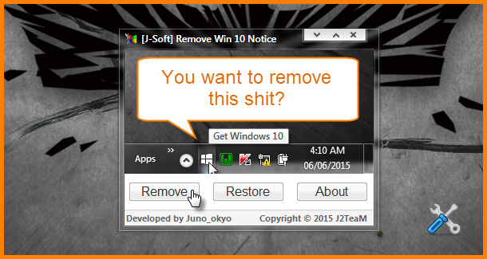

Windows 10 Notice Remover
Disable GWX.exe auto-start to remove notice about Windows 10 on Tray Menu in Windows 7/8.
Screenshot

Download
You can use a prebuild version or download the source code and build it yourself.
Contributing
- Fork it!
- Create your feature branch:
git checkout -b my-new-feature - Commit your changes:
git commit -am 'Add some feature' - Push to the branch:
git push origin my-new-feature - Submit a pull request

Credits
- Juno_okyo junookyo@gmail.com
- IconFinder.com (for icon using in my software)
License
The MIT License (MIT)
Copyright (c) 2015 Juno_okyo
Permission is hereby granted, free of charge, to any person obtaining a copy of this software and associated documentation files (the "Software"), to deal in the Software without restriction, including without limitation the rights to use, copy, modify, merge, publish, distribute, sublicense, and/or sell copies of the Software, and to permit persons to whom the Software is furnished to do so, subject to the following conditions:
The above copyright notice and this permission notice shall be included in all copies or substantial portions of the Software.
THE SOFTWARE IS PROVIDED "AS IS", WITHOUT WARRANTY OF ANY KIND, EXPRESS OR IMPLIED, INCLUDING BUT NOT LIMITED TO THE WARRANTIES OF MERCHANTABILITY, FITNESS FOR A PARTICULAR PURPOSE AND NONINFRINGEMENT. IN NO EVENT SHALL THE AUTHORS OR COPYRIGHT HOLDERS BE LIABLE FOR ANY CLAIM, DAMAGES OR OTHER LIABILITY, WHETHER IN AN ACTION OF CONTRACT, TORT OR OTHERWISE, ARISING FROM, OUT OF OR IN CONNECTION WITH THE SOFTWARE OR THE USE OR OTHER DEALINGS IN THE SOFTWARE.